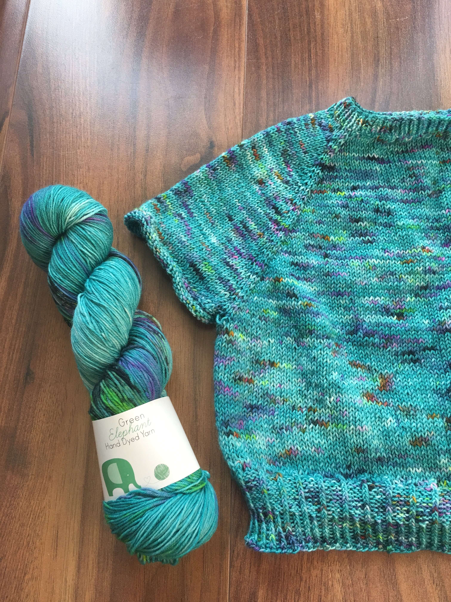
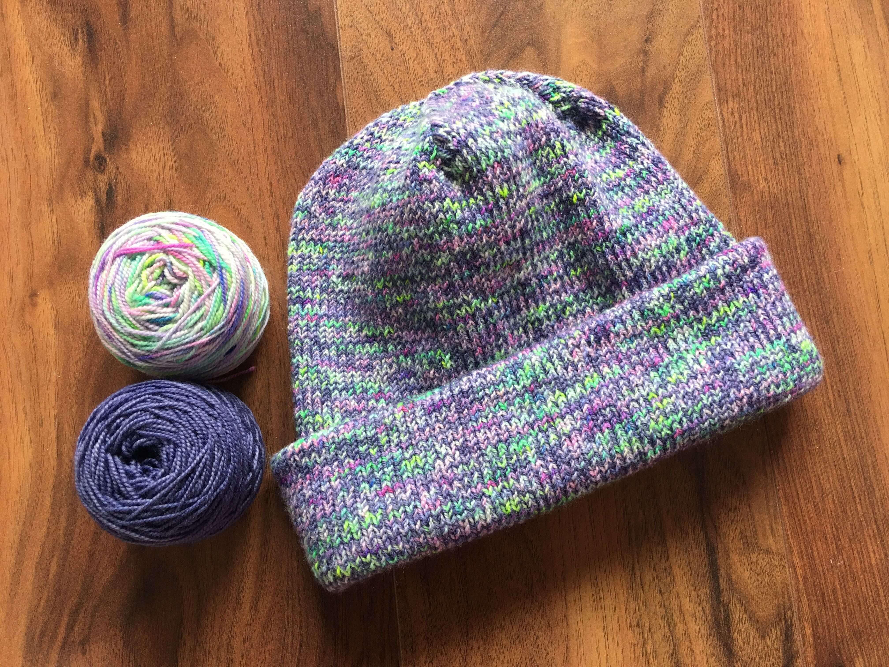
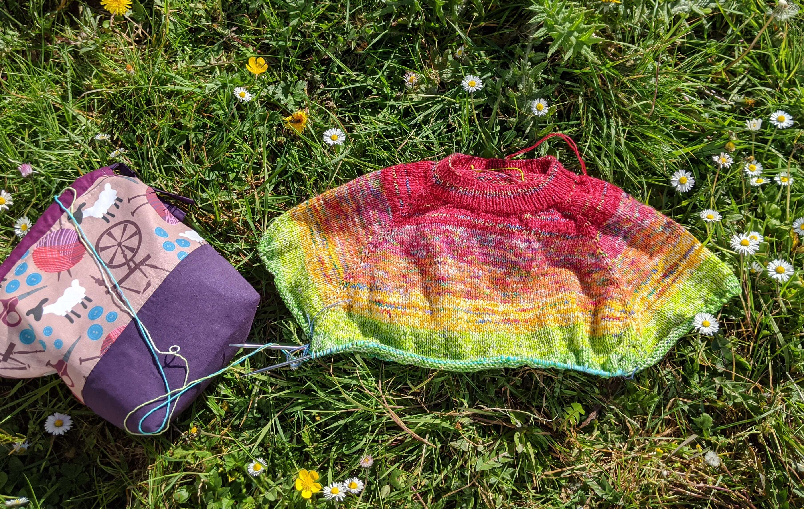

Projects
This is a place to log the projects I have worked on, to share them and hope to inspire others to make them too! If you see something you like, feel free to imagine your own version and bring it to life. If you have any questions, feel free to ask!
Nausicaa
 This cropped sweater was such a quick knit and it only uses 1 skein of fingering weight yarn for the smaller sizes. It is worked top down using raglan increases and shaped with short rows. Iused a colourway called Seaside which I dyed especially for the Yarnfolk Festival of Yarn in 2019.This is a very light sweater, suitable for wearing with jeans or over a dress or tunic.The pattern is designed by Audrey Borrego, a knitwear designer from the south west of France.
Oslo Hat
 This is a super cosy hat and enjoyable to knit too. It is knit in a dk weight yarn, or 2 strands of fingering weight yarn held together. It is knit in one continuous tube, then folded before adding the brim. I used a non superwash yarn in colourways Nightfall and Winnie.The pattern is designed by Mette, a creative entrepreneur designing under the brand PetiteKnit.
Simple Something
 At the start of March 2020, I was searching for a new project and I had a box of leftover fingering weight yarns from numerous other projects. I decided on a colourful sweater. After sorting through the leftover box I realised (in true fashion) that I could make a rainbow sweater! I loved knitting every stitch of this sweater. I can remember sitting in my back garden knitting, the sun was shining and my kids played in the background.The pattern is designed by Ankestrick, a sweater knitwear designer based in Berlin.